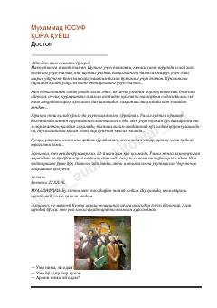

QQQatag'on yillari fojialari va ziyolilar qismatiga bag'ishlangan ta'sirli doston.
Ushbu doston o'zbek xalqining qatag'on yillaridagi fojiali taqdirini, adiblar va ziyolilarning boshiga tushgan kulfatlarni badiiy tilda tasvirlaydi. Asar tarixiy xotira, adolat va insoniylik qadrini ulug'lovchi chuqur dramatik mazmunga ega.